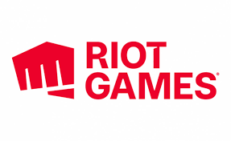

Riot Games se fundó en 2006 para desarrollar, publicar y apoyar los juegos más centrados en los jugadores del mundo. En 2009, lanzamos nuestro primer juego reconocido mundialmente, League of Legends. Se ha convertido en el juego para PC más jugado en el mundo y en un factor clave del crecimiento explosivo de los esports. Con la llegada de la segunda década de LoL, seguimos haciendo evolucionar el juego, al mismo tiempo que ofrecemos nuevas experiencias a los jugadores, como Teamfight Tactics, Legends of Runeterra, VALORANT, League of Legends: Wild Rift y otros muchos títulos en desarrollo. Además, Riot Forge da acceso a los desarrolladores a la propiedad intelectual de Riot para que puedan crear juegos como Ruined King y muchas otras aventuras con las que explorar Runaterra. También estamos expandiendo el mundo de Runaterra mediante proyectos multimedia como música, cómics, juegos de mesa y nuestra serie de animación galardonada con premios Emmy, Arcane. En el Campeonato Mundial de League of Legends anual participan los equipos clasificados de 12 ligas internacionales. El Mundial es el torneo de esports más visto y uno de los eventos deportivos y de videojuegos más importantes y populares del mundo. La empresa Riot, fundada por Brandon Beck y Marc Merrill y dirigida por el director ejecutivo Nicolo Laurent, tiene su oficina central en Los Ángeles, California. Cuenta con más de 4500 empleados en más de 20 oficinas por todo el mundo. A Riot se la ha considerado oficialmente un gran sitio en el que trabajar durante tres años consecutivos y ha aparecido en numerosas listas, incluidas las de "100 mejores empresas para las que trabajar", "25 empresas para las que trabajar en el sector tecnológico", "100 mejores lugares de trabajo para millenials" y "50 lugares de trabajo más flexibles" de la revista Fortune.
